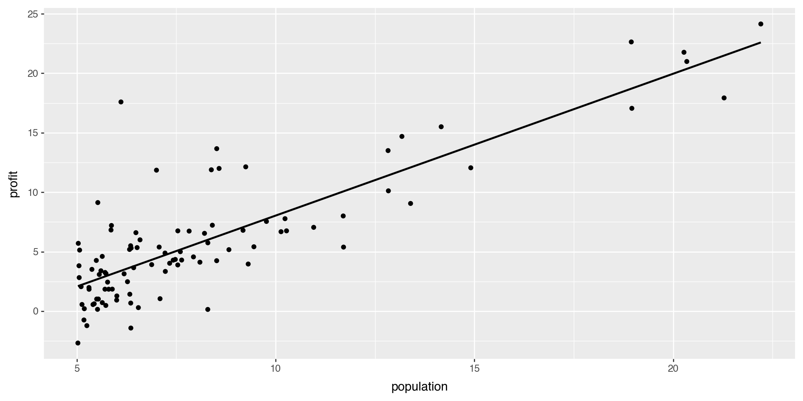
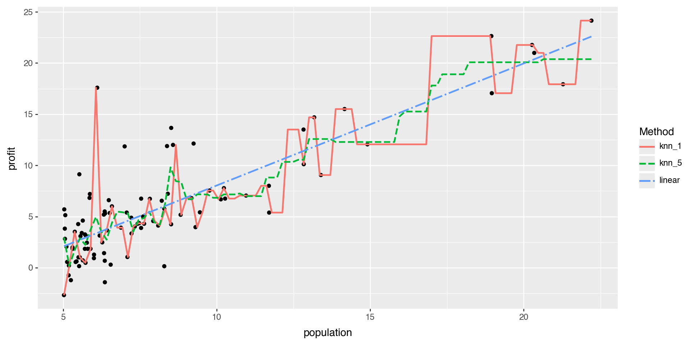

import pandas as pd
import numpy as np
from sklearn.linear_model import LinearRegression
from sklearn.neighbors import KNeighborsRegressor
from sklearn.model_selection import train_test_split
from sklearn.preprocessing import PolynomialFeatures, StandardScaler
from sklearn.datasets import fetch_openml
import matplotlib.pyplot as plt
from plotnine import *
from itables import showMath 4025: Data Splitting + KNN
Dr. Eric Friedlander
Computational Setup
Comparing Models: Data Splitting
- Split
amesdata set into two parts- Training set: randomly selected proportion \(p\) (typically 50-90%) of data used for fitting model
- Test set: randomly selected proportion \(1-p\) of data used for estimating prediction error
- If comparing A LOT of models, split into three parts to prevent information leakage
- Training set: randomly selected proportion \(p\) (typically 50-90%) of data used for fitting model
- Validation set: randomly selected proportion \(q\) (typically 20-30%) of data used to choosing tuning parameters
- Test set: randomly selected proportion \(1-p-q\) of data used for estimating prediction error
- Idea: use data your model hasn’t seen to get more accurate estimate of error and prevent overfitting
Comparing Models: Data Splitting with scikit-learn
# Load ames dataset from sklearn
ames_data = fetch_openml(name="house_prices", as_frame=True)
ames = ames_data.frame
np.random.seed(4025) # Why?
# Split data 70/30
ames_train, ames_test = train_test_split(
ames,
test_size=0.30,
random_state=4025
)
print(f"Training set size: {len(ames_train)}")
print(f"Test set size: {len(ames_test)}")Training set size: 1022
Test set size: 438- In scikit-learn, use
stratifyparameter for classification tasks - For regression, random splitting is typically sufficient
Linear Regression: Comparing Models
- Let’s create three models with
SalePriceas the response:- fit1: a linear regression model with
BedroomAbvGras the only predictor - fit2: a linear regression model with
GrLivAreaas the only predictor - fit3 (similar to model in previous slides): a multiple regression model with
GrLivAreaandBedroomAbvGras predictors - fit4: super flexible model which fits a 10th degree polynomial to
GrLivAreaand a 2nd degree polynomial toBedroomAbvGr
- fit1: a linear regression model with
# Prepare target variable
y_train = ames_train["SalePrice"]
y_test = ames_test["SalePrice"]
# Fit 1: Only BedroomAbvGr
fit1 = LinearRegression().fit(ames_train[["BedroomAbvGr"]], y_train)
# Fit 2: Only GrLivArea
fit2 = LinearRegression().fit(ames_train[["GrLivArea"]], y_train)
# Fit 3: Both predictors
fit3 = LinearRegression().fit(ames_train[["GrLivArea", "BedroomAbvGr"]], y_train)
# Fit 4: Polynomial features (10th degree for GrLivArea, 2nd for BedroomAbvGr)
poly_liv = PolynomialFeatures(degree=10, include_bias=False)
poly_bed = PolynomialFeatures(degree=2, include_bias=False)
X_train_poly = np.hstack([
poly_liv.fit_transform(ames_train[["GrLivArea"]]),
poly_bed.fit_transform(ames_train[["BedroomAbvGr"]])
])
fit4 = LinearRegression().fit(X_train_poly, y_train)Computing MSE
# Function to compute MSE
def compute_mse(y_true, y_pred):
return np.mean((y_true - y_pred) ** 2)
# Fit 1
fit1_train_mse = compute_mse(y_train, fit1.predict(ames_train[["BedroomAbvGr"]]))
fit1_test_mse = compute_mse(y_test, fit1.predict(ames_test[["BedroomAbvGr"]]))
# Fit 2
fit2_train_mse = compute_mse(y_train, fit2.predict(ames_train[["GrLivArea"]]))
fit2_test_mse = compute_mse(y_test, fit2.predict(ames_test[["GrLivArea"]]))
# Fit 3
fit3_train_mse = compute_mse(y_train, fit3.predict(ames_train[["GrLivArea", "BedroomAbvGr"]]))
fit3_test_mse = compute_mse(y_test, fit3.predict(ames_test[["GrLivArea", "BedroomAbvGr"]]))
# Fit 4
X_test_poly = np.hstack([
poly_liv.transform(ames_test[["GrLivArea"]]),
poly_bed.transform(ames_test[["BedroomAbvGr"]])
])
fit4_train_mse = compute_mse(y_train, fit4.predict(X_train_poly))
fit4_test_mse = compute_mse(y_test, fit4.predict(X_test_poly))Question
Without looking at the numbers
- Do we know which of the following is the smallest:
fit1_train_mse,fit2_train_mse,fit3_train_mse,fit4_train_mse? Yes,fit4_train_mse - Do we know which of the following is the smallest:
fit1_test_mse,fit2_test_mse,fit3_test_mse,fit4_test_mse? No
Choosing a Model
# Training Errors
train_mses = [fit1_train_mse, fit2_train_mse, fit3_train_mse, fit4_train_mse]
print("Training MSEs:", [f"{mse:.0f}" for mse in train_mses])
print(f"Best training: fit{np.argmin(train_mses) + 1}")
# Test Errors
test_mses = [fit1_test_mse, fit2_test_mse, fit3_test_mse, fit4_test_mse]
print("\nTest MSEs:", [f"{mse:.0f}" for mse in test_mses])
print(f"Best test: fit{np.argmin(test_mses) + 1}")Training MSEs: ['6175267159', '3097659031', '2737919477', '4028341437']
Best training: fit3
Test MSEs: ['6050113810', '3261997840', '2954466882', '9570903715495']
Best test: fit3fit4has the lowest training MSE (to be expected)fit3has the lowest test MSE- We would choose
fit3
- We would choose
- Anything else interesting we see?
K-Nearest Neighbors
Regression: Conditional Averaging
Restaurant Outlets Profit dataset

What is a good value of \(\hat{f}(x)\) (expected profit), say at \(x=6\)?
A possible choice is the average of the observed responses at \(x=6\). But we may not observe responses for certain \(x\) values.
K-Nearest Neighbors (KNN) Regression
- Non-parametric approach
- Formally: Given a value for \(K\) and a test data point \(x_0\), \[\hat{f}(x_0)=\dfrac{1}{K} \sum_{x_i \in \mathcal{N}_0} y_i=\text{Average} \ \left(y_i \ \text{for all} \ i:\ x_i \in \mathcal{N}_0\right) \] where \(\mathcal{N}_0\) is the set of the \(K\) training observations closest to \(x_0\).
- Informally, average together the \(K\) “closest” observations in your training set
- “Closeness”: usually use the Euclidean metric to measure distance
- Euclidean distance between \(\mathbf{X}_i=(x_{i1}, x_{i2}, \ldots, x_{ip})\) and \(\mathbf{x}_j=(x_{j1}, x_{j2}, \ldots, x_{jp})\): \[||\mathbf{x}_i-\mathbf{x}_j||_2 = \sqrt{(x_{i1}-x_{j1})^2 + (x_{i2}-x_{j2})^2 + \ldots + (x_{ip}-x_{jp })^2}\]
KNN Regression (single predictor): Fit
Regression Methods: Comparison

Question!!!
As \(K\) in KNN regression increases:
- the flexibility of the fit (decreases /increases)
- the bias of the fit (decreases/increases )
- the variance of the fit (decreases/increases)
K-Nearest Neighbors Regression (multiple predictors)
- Let’s look at the
amesdata
| Loading ITables v2.6.2 from the internet... (need help?) |
- Should 1 square foot count the same as 1 bedroom?
- Need to center and scale (freq. just say scale)
- subtract mean from each predictor
- divide by standard deviation of each predictor
- compares apples-to-apples
Scaling in Python
# Scale predictors using StandardScaler
scaler = StandardScaler()
# Fit and transform
ames_scaled = pd.DataFrame({
"size_scaled": scaler.fit_transform(ames[["GrLivArea"]])[:, 0],
"num_bedrooms_scaled": scaler.fit_transform(ames[["BedroomAbvGr"]])[:, 0],
"price": ames["SalePrice"].values
})
show(ames_scaled.head())| Loading ITables v2.6.2 from the internet... (need help?) |
Question…
- What about the training and test sets?
- Need to scale BOTH sets based on the mean and standard deviation of the training set…
- Discussion: Why?
- Discussion: Why don’t I need to center and scale
Sale_Price?
Scaling Revisited
# Create scalers fitted ONLY on training data
scaler_size = StandardScaler()
scaler_bedrooms = StandardScaler()
# Fit scalers on training data and transform
ames_train_scaled = pd.DataFrame({
"size_scaled": scaler_size.fit_transform(ames_train[["GrLivArea"]])[:, 0],
"num_bedrooms_scaled": scaler_bedrooms.fit_transform(ames_train[["BedroomAbvGr"]])[:, 0],
"price": ames_train["SalePrice"].values
})
# Transform test data using training parameters (no fit!)
ames_test_scaled = pd.DataFrame({
"size_scaled": scaler_size.transform(ames_test[["GrLivArea"]])[:, 0],
"num_bedrooms_scaled": scaler_bedrooms.transform(ames_test[["BedroomAbvGr"]])[:, 0],
"price": ames_test["SalePrice"].values
})- Next time: using
Pipelineinscikit-learnto simplify this process
K-Nearest Neighbors Regression (multiple predictors)
# 10-NN regression
knnfit10 = KNeighborsRegressor(n_neighbors=10)
knnfit10.fit(
ames_train_scaled[["size_scaled", "num_bedrooms_scaled"]],
ames_train_scaled["price"]
)KNeighborsRegressor(n_neighbors=10)In a Jupyter environment, please rerun this cell to show the HTML representation or trust the notebook.
On GitHub, the HTML representation is unable to render, please try loading this page with nbviewer.org.
Parameters
- Test Point:
GrLivArea= 2000 square feet, andBedroomAbvGr= 3, then
# Scale the test point using training parameters
test_point = pd.DataFrame({
"GrLivArea": [2000],
"BedroomAbvGr": [3]
})
test_point_scaled = np.array([
scaler_size.transform(test_point[["GrLivArea"]])[0, 0],
scaler_bedrooms.transform(test_point[["BedroomAbvGr"]])[0, 0]
]).reshape(1, -1)
# Obtain 10-NN prediction
prediction = knnfit10.predict(test_point_scaled)
print(f"Predicted Sale Price: ${prediction[0]:,.2f}")Predicted Sale Price: $257,619.00